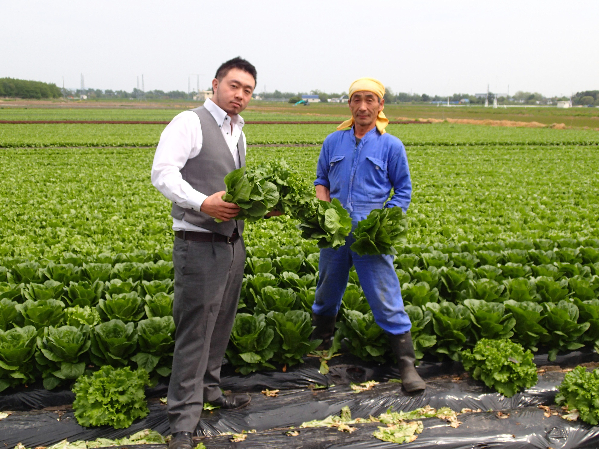
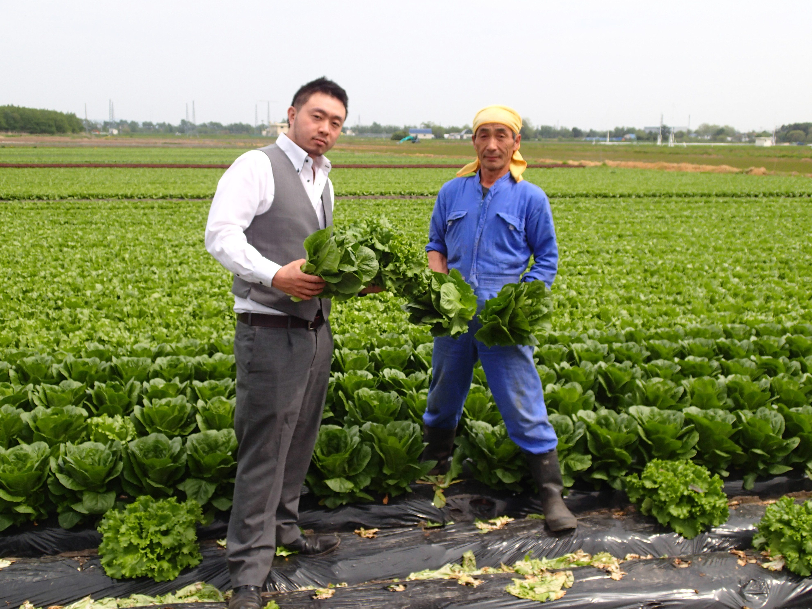
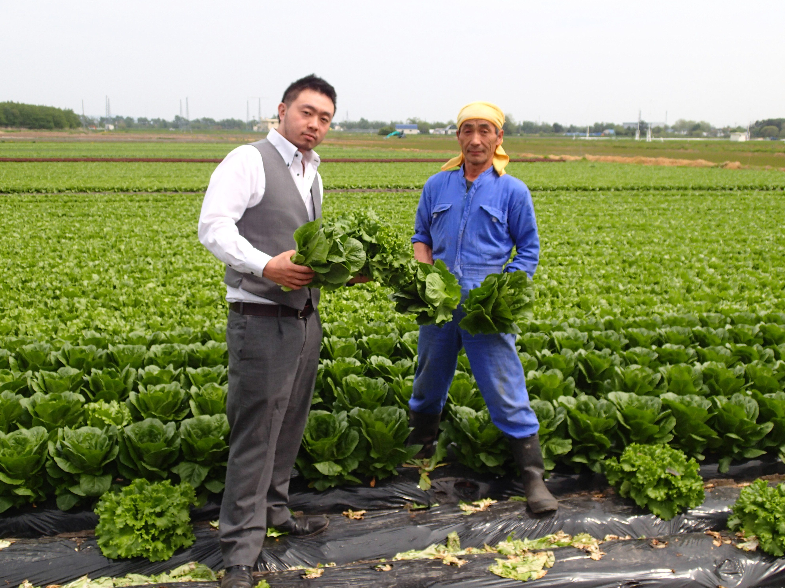
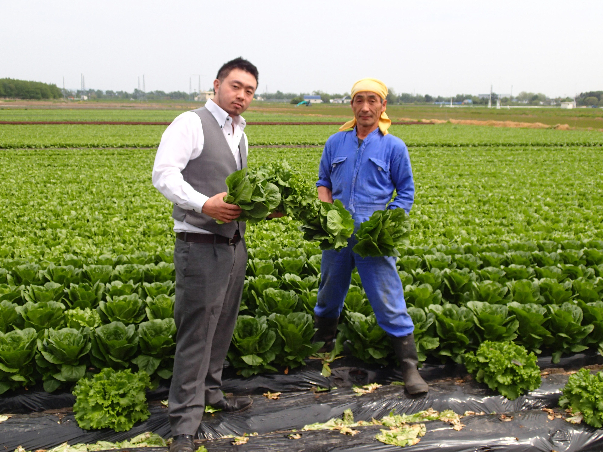

 


Everyone knows.
Everyone has done it. A shop loved by everyone.
That is the way that Sumirich aims.
誰でも知っている。誰でも行ったことがある。誰からも愛されるお店。それが炭リッチの目指す道。
全国各地の生産地を巡り、厳選した良質な食材を直送することでリーズナブルに提供しています。海外展開も視野に、さらに店舗チェーンを拡大しながら、豊かな食とサービスで地域をもっと元気に、そして笑顔にできるような、外食の新しい付加価値を創造していきます。
お客様へ提供させていただく食材だからこそ。
はじめに私たちは不備な点もございますが、仕入れにまじめな集団です。現地に何度も足を運び、現地にお店も作り、加工場も作り、各町に認定ももらい生産地を開拓して参りました。信頼した生産者の食材を使用した料理は美味しさに温もりを生み出します。お客様へ提供させていただく食材だからこそ、現地へ行き、生産者の技術・声を理解した上でご提供させて頂いてます。
牡蠣小屋の直営店より新鮮な牡蠣を直送。
生産者との厚い繋がりにより北海道3拠点から安定して新鮮な牡蠣をご提供。牡蠣を年間約13トン仕入れている炭リッチが行き着いた答え、それは「一年中通して北海道の濃厚で美味しい牡蠣をお客様へ提供したい」でした。牡蠣は環境に非常に左右されるデリケートな食材。季節やその年の出来栄えにムラがあるのは事実です。炭リッチではそれらの問題を北海道3拠点から仕入れることで解消！直送だから出来る新鮮さ安さを実現。
炭リッチは「自慢の食材をお値打ちで炭火焼きで楽しめるお店」です。
特にお肉に対するこだわり。一年中仕入れ先になる生産地の訪問を欠かしません。また各スタッフを集め、食べ比べをし「これよりあれの方が美味しい」「これは大当たり」「この肉ならこの焼き方がバッチリ合う」などなど尽きることなく話し合い、、お客様のテーブルへとご提供させて頂いております。ぜひ、選び抜かれた食材と炭焼きのこだわりをお楽しみください。
生産者と料理人とお客様をつなぐ揺るぎない思い、それが「仕入れに真面目」です。
生産者が心を込めて作った食材を料理人も心を込めてお作りしております。